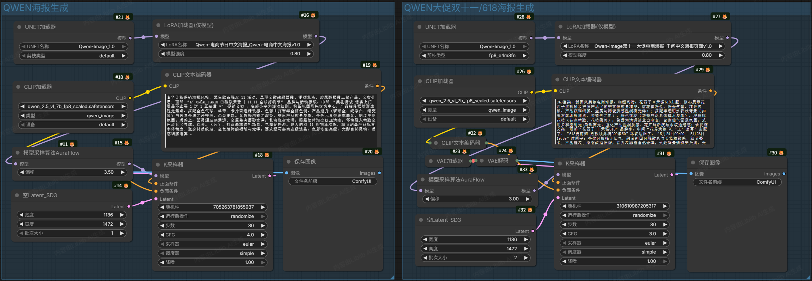
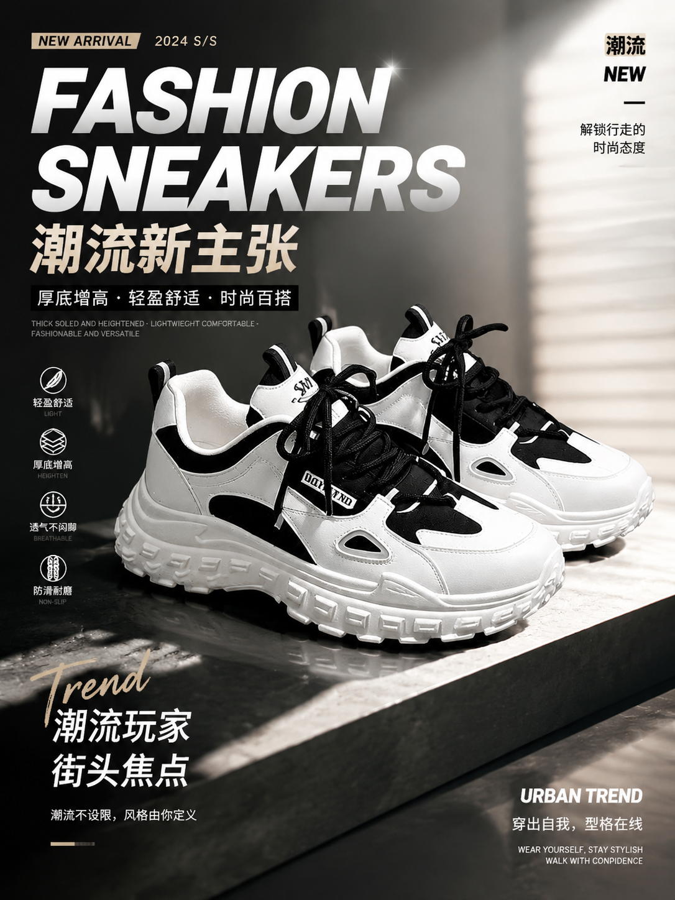
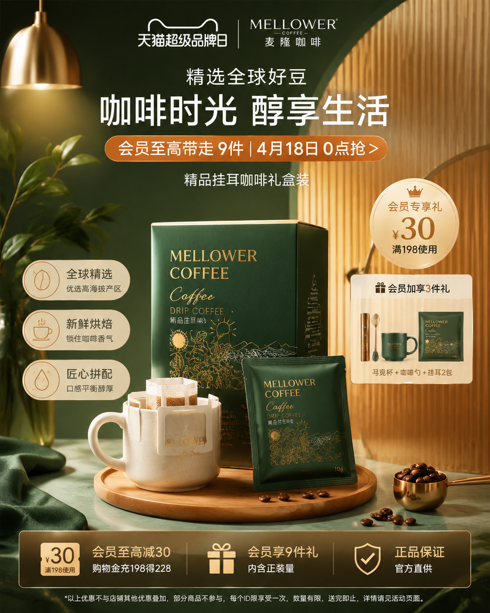
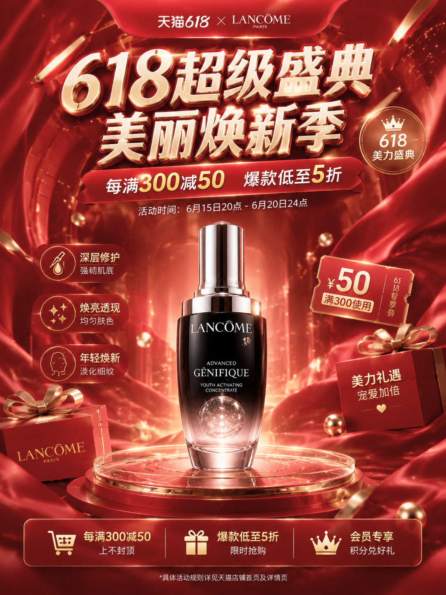
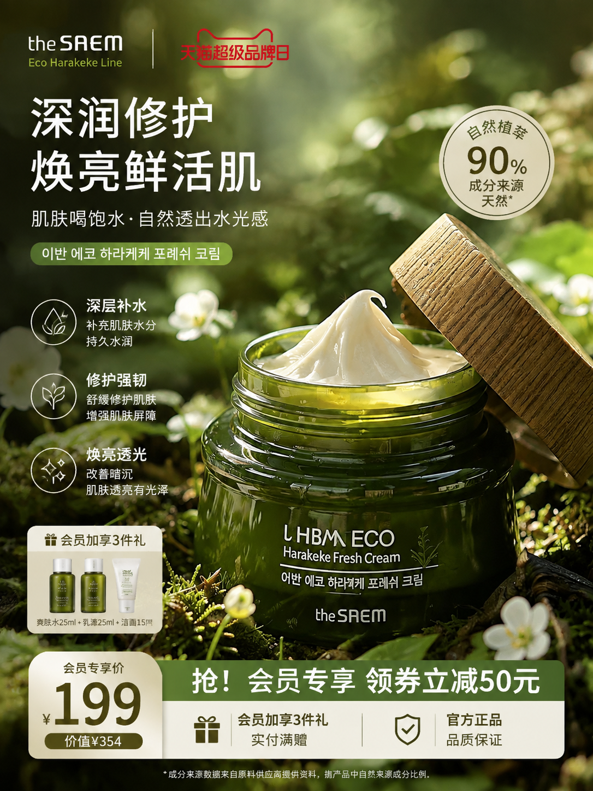

项目背景
这是一项课程作业方向的个人 AIGC 探索：在 Stable Diffusion 生态里，我想验证"节点工作流 + 文生图底模型 + LoRA 风格控制"能不能替代传统商品摄影，输出可直接用于电商主图与大促海报的视觉素材。
项目早于另外两个 portfolio 项目完成，是我在 AIGC 视觉方向上从模型调用走向工作流编排的一次练习——重点不在写代码，而在节点编排、参数调试与品类适配。
项目目标
核心是打通"商品图 + 文字 Prompt → ComfyUI 工作流 → 电商级视觉素材"的链路，具体拆解为：
① 搭建以 Qwen-Image 1.0 为底模型的 ComfyUI 节点工作流；② 通过双 LoRA 分别承载电商节日中文海报与双十一大促电商海报两套风格；③ 跨品类测试（美妆 / 数码 / 食品 / 鞋服）验证工作流通用性；④ 输出含产品主体、商业摄影感与品牌高级感的高清电商图。
设计思路
采用 ComfyUI 节点式编排：商品图与文字 Prompt 作为输入，经 Qwen-Image 模型节点采样，再由 VAE Decode 输出高清电商图。本工作流不使用 ControlNet，产品结构与背景完全依靠 Qwen-Image 的文生图能力 + 双 LoRA 风格权重控制，让生成结果更贴合"海报 / 主图"的视觉调性。

功能流程
生成链路按四节点串行，最终落到 VAE 解码与高清输出：
输入节点
商品原图 + 文本 Prompt + 尺寸参数
模型节点
Qwen-Image 1.0 + CLIP + 双 LoRA 加载
采样节点
KSampler 负责图像生成与参数调整
输出节点
VAE Decode → 高清放大 → 电商图


制作过程
先搭最小工作流跑通 Qwen-Image 1.0 单图生成，确认 CLIP 与模型类型配置无误后，再并联双 LoRA 加载器：左侧加载 Qwen-电商节日中文海报 v1.0，右侧加载 Qwen-双十一大促电商海报 / 千问中文海报页面 v1.0，分别对齐两类海报的视觉调性，逐步调参覆盖美妆、数码、食品、鞋服多品类。
中途最大的坑是文字扭曲——Qwen-Image 直出时，海报上的中文标题与促销文案会出现笔画变形、字符粘连。我的处理方式是不硬刚模型：把生成图导入 GPT、即梦等外部软件做文字修复与版式重排，再回贴到工作流输出图上，避免反复重采样浪费时间。
技术实现
ComfyUI 节点工作流，核心模块与配置如下：
双 LoRA 加载器并行接入模型节点，分别承担"电商节日中文海报"与"双十一大促电商海报"两套风格权重；采样与解码参数随品类微调，美妆类偏软光与玻璃质感，数码类偏霓虹背景与商业摄影感。
最终成果
工作流稳定可复用，单张图片生成耗时约 20–30 秒，输出分辨率 1130 × 1472；跨美妆 / 数码 / 食品 / 鞋服多品类产出电商主图与大促海报样图，验证了 Qwen-Image + 双 LoRA 在电商视觉生成上的可行性。



这个项目让我从"调 API"走到"编排工作流"：在 Qwen-Image 文生图能力之上，用节点思维组织模型、LoRA、采样与解码，并学会在模型短板处（文字渲染）借助外部工具协作完成最终交付，是 AIGC 视觉工程化的一次完整练手。